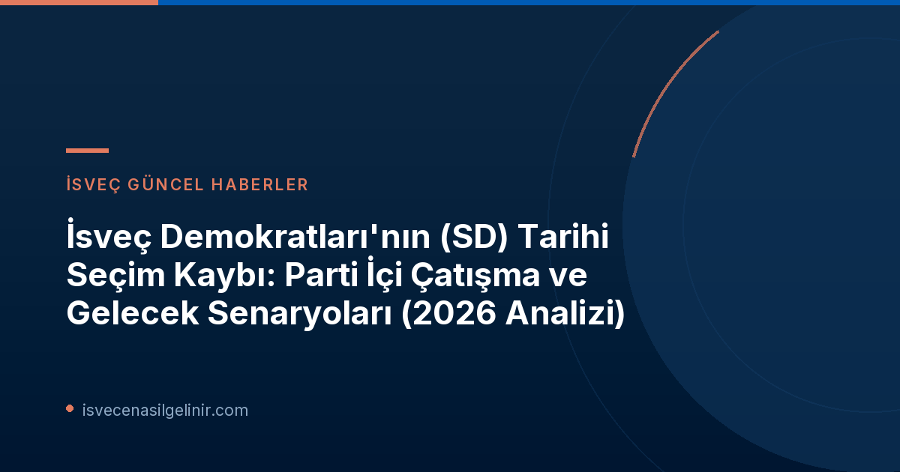

2026 Seçim Sonuçları ve İsveç Demokratları Üzerindeki Şok Etkisi
2026 Riksdag seçimleri, İsveç Demokratları için beklenmedik bir sonuçla tamamlandı. SVT'nin seçim tahminleri yayınlandığında, partinin seçim takip merkezlerinde gözle görülür bir şok ve moralsizlik hakimdi. Daha önce sürekli yükselişte olan bir parti için bu gerileme, hem tabanda hem de parti yönetiminde geniş çaplı bir değerlendirme ihtiyacı doğurdu.
SVT'de yayınlanan analize göre, İsveç Demokratları oy oranını %17.5'e düşürerek 3.1 puanlık bir kayıp yaşadı ve ülkenin üçüncü büyük partisi konumuna geriledi. Bu düşüş, 2022 seçimlerinde ikinci en büyük parti olmaktan sonra parti için büyük bir gerileme anlamına geliyordu. Daha detaylı İsveç güncel siyaset analizleri ve İsveç Vatandaşlık Sınavı hakkında bilgiler için sitemizi ziyaret edebilirsiniz.
İsveç Demokratları 2026 Seçim Ana Verileri
| Seçim Yılı | Oy Oranı (Tahmini) | Değişim | Sıralama |
|---|---|---|---|
| 2022 Riksdag Seçimi | ~%20.6 | Yukarı | 2. Parti |
| 2026 Riksdag Seçimi | %17.5 | -3.1 puan | 3. Parti |
Not: Yukardaki veriler SVT Nyheter'in ön analizlerine dayanmaktadır.
Düşüşün Arkasındaki Olası Nedenler: Parti İçi ve Dışı Perspektifler
Partinin yaşadığı bu oy kaybının ardında yatan nedenler hakkında hem parti içinde hem de siyasi yorumcular arasında farklı görüşler dile getiriliyor.
Tidö İşbirliği ve Sorumluluk Yükü
- Parti lideri Jimmie Åkesson, Perşembe günü düzenlediği basın toplantısında, dört yıllık Tidö İşbirliği sürecinin ve sorumluluk almanın "bir miktar yara almayı beraberinde getirebileceğini" ifade etti.
- Åkesson, Tidö partileri arasındaki farkların her zaman açıkça anlaşılamadığını ve bu durumun bazı seçmenlerde oy verdikleri partinin aslında o kadar da fark yaratmadığı algısı oluşturabileceğini belirtti.
Kayıp Oylar ve Göçmenlik Tartışması
- SD yetkilileri arasında, seçmen kaybının küçük partilere kayıştan ve hatta "İslamist seçmenlerin mobilize edilmesinden" kaynaklandığı şeklinde açıklamalar yapıldı. Åkesson da Sosyal Demokratlar ve Sol Parti'yi "İslamist seçmenleri mobilize etmekle" suçladı, bu da ilgili partiler tarafından sert şekilde eleştirildi.
- Kent Ekeroth gibi bazı vekillerin tartışmalı "yurtdışından oy çiftliği getiriyoruz" gibi yorumları partiye zarar vermiş olabilir.
- Tobias Andersson gibi isimler ise bazı seçmenlerin oy kullanmamayı tercih ettiğini öne sürdü.
Genç Seçmenler ve Kampanya Eleştirileri
SD, genç seçmenler arasındaki desteğini önemli ölçüde kaybeden partilerden biri oldu. Bu durum, partinin gelecekteki seçmen tabanı için endişe verici bir tablo çiziyor. Ayrıca, parti içinde seçim kampanyasına yönelik anonim eleştirilerin de dile getirildiği belirtiliyor.
Mats Knutson'dan Kritik Analiz: Falang Çatışması Yeniden mi Doğuyor?
SVT'nin iç politika yorumcusu Mats Knutson, oy kaybının parti içinde bir "falang (grup) çatışmasını" yeniden canlandırabileceğini vurguluyor. Ona göre bu çatışma, partiyi "daha pragmatik bir yöne doğru geliştirmek isteyenler" ile "daha radikal bir yönelim arayanlar" arasında yaşanabilir.
İsveç Demokratları İçindeki Potansiyel Falanglar
- Pragmatik Kanat: Tidö işbirliği gibi hükümet düzeyinde sorumluluk almayı ve siyasi uzlaşıları hedefleyen, daha ana akım bir çizgiye yaklaşmak isteyenler.
- Radikal Kanat: Partinin kuruluş felsefesine daha sadık kalmayı, daha sert politikalar izlemeyi ve ana akım partilerden daha keskin bir farklılaşma peşinde olanlar.
Bu iç çatışma, partinin gelecekteki stratejisi ve kimliği üzerinde belirleyici bir rol oynayabilir.
Sonuç ve Gelecek Perspektifleri
İsveç Demokratları'nın 2026 seçimlerindeki oy kaybı, İsveç siyasetinde önemli bir dönüm noktası olarak görülüyor. Partinin bu yenilgiyi nasıl analiz edeceği, liderlik kadrosunun atacağı adımlar ve özellikle ortaya çıkabilecek falang çatışmasının nasıl yönetileceği, SD'nin ve genel olarak İsveç siyasetinin geleceğini şekillendirecek temel unsurlar olacaktır. Bu süreç, partinin sadece seçmen tabanını yeniden kazanma stratejilerini değil, aynı zamanda siyasi kimliğini yeniden tanımlama çabalarını da beraberinde getirecektir. Bu gelişmelerin İsveç'e göçmenlik süreçleri ve sverigemedborgarskapsprov.com gibi konulardaki yansımalarını da yakından takip etmek önem taşımaktadır.
Referanslar:
- SVT Nyheter Inrikes - Mats Knutson om SD-tappet: Kan återaktivera en falangstrid
- sverigemedborgarskapsprov.com
İsveç Göçmenlik ve Vatandaşlık Süreçleri Hakkında Daha Fazla Bilgi Edinin
İsveç'te yaşam, çalışma veya vatandaşlık başvuru süreçleri hakkında güncel ve güvenilir bilgilere erişmek için aşağıdaki butona tıklayın.